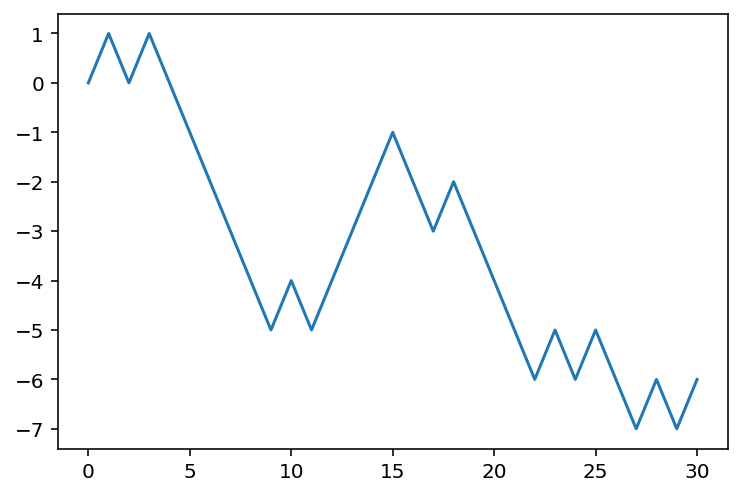
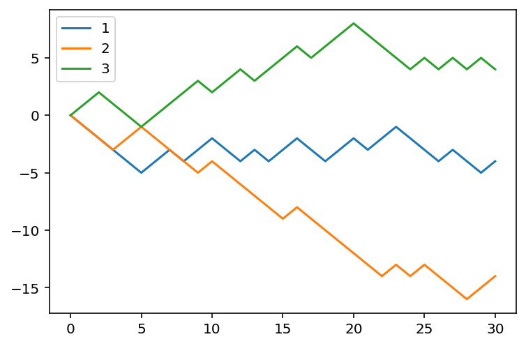

import numpy as np3 Package: numpy
The main reference for this chapter is [1].
3.1 Basics
The core data structure for numpy is numpy.ndarray. It is called NumPy N-d array. In most cases we will use its alias array for simplicity. You may treat it as a generalized version of list. However it can do so much more than the built-in list.
To use numpy, we just import it. In most cases you would like to use the alias np.
Using alias, we will just call NumPy N-d array np.array.
3.1.1 Understanding np.array
The simplest way to look at an np.array is to think it as lists of list. Here are some examples.
- This is an example of a 1d array. Note that it can be treated as a list. You may get access to its entries by 1 index, e.g.
a[0]. This means that: we have a list, and we want to get the0th element in the list.
a = np.array([1, 2])
aarray([1, 2])- This is an example of a 2d array. Note that it can be treated as a list of lists. You may get access to its entries by 2 indexes, e.g.
b[0, 0]. This means that: we have a list of lists. We first get the0th element (which is a list), and then get the0th element from this0th list (which is a number).
b = np.array([[1, 2], [3,4]])
barray([[1, 2],
[3, 4]])- This is an example of a 3d array. Note that it can be treated as a list of lists of lists. You may get access to its entries by 3 indexes, e.g.
c[0, 0, 0]. This means that: we have a list of lists of lists. We first get the0th element (which is a list of lists), and then get the0th element (which is a list) from this0th list of lists, and then get the0th element (which is a number) from the previous list.
c = np.array([[[1, 2], [3,4]], [[1, 2], [3,4]]])
carray([[[1, 2],
[3, 4]],
[[1, 2],
[3, 4]]])3.1.1.1 The dimension of np.array
There is a very confusing terminology for np.array: dimension. The actual word using in documents is actually axes. It refers to the number of coordinates required to describe the location.
In the previous example, a is a 1d array since you only need 1 index to get entries, b is a 2d array since you need 2 indexes to get entries, and c is a 3d array since you need 3 indexes to get entries.
We could use .ndim to check the dimension of a np.array.
d = np.array([[1, 2, 3], [4, 5, 6]])
d.ndim2
Comparing to Linear algebras
The dimension of an np.array and the dimenion of a vector in Linear algebras are totally different. In this example, as a np.array, a=np.array([1, 2]) is a 1d np.array, of length 2. As a vector, it is a 2d vector.
To describe the length of each axes, we could use .shape. It will tells us the length of each axis. In other words, it tells us the maximal index of each axis.
Example 3.1
d = np.array([[1, 2, 3], [4, 5, 6]])
d.shape(2, 3)The shape of d is (2, 3), which means that the length of axis 0 is 2 and the length of axis 1 is 3.
- Axis 0 is the vertical axis, and its index is corresponding to rows. The length of axis 0 is actually the number of rows.
- Axis 1 is the horizental axis, and its index is corresponding to columns. The length of axis 1 is actually the number of columns.
So a 2d array can be treated as a matrix, and the shape being (2, 3) means that the matrix has 2 rows and 3 columns.
Danger
.ndim and .shape are not methods. There is no () behind.
3.1.1.2 Moving along axis
A lot of numpy methods has an argument axis=, which let you to specify performing the action along which axis. You may understand this “along axis” in the following way. axis=i means that when we perform the action, we keep all other indexes the same, only changing the index on axis i.
For example, b.sum(axis=0) means that we want to add all entries along axis 0. So we start from a certain entry, keeping all other index the same when changing index on axis 0 only, and add all these entries together. Since axis 0 is corresponding to rows index, only changing row index means we are moving vertically. So if b is a 2d array, b.sum(axis=0) means we are adding all column together.
We will do more examples later this section.
3.1.2 Create np.array
There are many ways to create np.array. We list some basic ways below.
Converting from a Python list
You may apply np.array() to a list to convert it into a np.array.
- A list of numbers will create a 1d array.
- A list of lists will create a 2d array.
- Further nested lists will create higher-dimensional arrays.
All arraies in the previous sections are created in this way.
Intrinsic NumPy array creation functions
Here is an incomplete list of such functions.
np.ones()andnp.zeros()- Both of them will create
np.arraywith the specified shape.
- Both of them will create
np.eye()andnp.diag()- Both will create 2d array. So they can also be treated as creating matrices.
np.arange(start, stop, step)- It will only create 1d array, which start from
starttostopwith the step sizestep. startis by default0andstepis by default1.- In most cases the
stopis NOT included, which is similar to Python list. - The syntax is very similar to
range(). The main difference between them is the object type of the output.
- It will only create 1d array, which start from
np.linspace(start, stop, num)- It will only create 1d array, which starts from
start, stops atstopwith totallynumof points in the array, each of which are equally spread. startandstopare always INCLUDED in the array.
- It will only create 1d array, which starts from
np.random.rand()and many other functions innp.randompackage.
These functions are straightforward. You may go to the official documents for more details. For example this is the page for np.arange(). You may find other functions on the left navigation bar, or you may use the search function to locate them.
Read from files
numpy provides several functions to read and write files. We discuss the most commonly used one: np.genfromtxt().
np.genfromtxt() is used to load data from a text file, with missing values handled as specified. The idea of this function is to first read the file as a string and then parse the structure of the string, automatically.
There are many arguments. Here are a few commonly used. For more details please read the official tutorial.
dtype: Data type of the resulting array. IfNone, the dtypes will be determined by the contents of each column, individually.delimiter: The string used to separate values. By default, any consecutive whitespaces act as delimiter.usecols: Which columns to read, with 0 being the first.encoding: This is used to decode the inputfile. The default setting forencodingisbytes. If it is set toNonethe system default is used. Please pay attention to the differences between these two.
Note that when choosing dtype, if the type is NOT a single type, the output will be a 1d array with each entry being a tuple. If it is a single type, the output will be a 2d array. Please see the following example.
import numpy as np
url = 'https://archive.ics.uci.edu/ml/machine-learning-databases/iris/iris.data'
iris_1d = np.genfromtxt(url, delimiter=',', dtype=None, encoding=None)
iris_2d = np.genfromtxt(url, delimiter=',', dtype='float', encoding=None)
iris_2d_str = np.genfromtxt(url, delimiter=',', dtype='str', encoding=None)
iris_1d[:10]array([(5.1, 3.5, 1.4, 0.2, 'Iris-setosa'),
(4.9, 3. , 1.4, 0.2, 'Iris-setosa'),
(4.7, 3.2, 1.3, 0.2, 'Iris-setosa'),
(4.6, 3.1, 1.5, 0.2, 'Iris-setosa'),
(5. , 3.6, 1.4, 0.2, 'Iris-setosa'),
(5.4, 3.9, 1.7, 0.4, 'Iris-setosa'),
(4.6, 3.4, 1.4, 0.3, 'Iris-setosa'),
(5. , 3.4, 1.5, 0.2, 'Iris-setosa'),
(4.4, 2.9, 1.4, 0.2, 'Iris-setosa'),
(4.9, 3.1, 1.5, 0.1, 'Iris-setosa')],
dtype=[('f0', '<f8'), ('f1', '<f8'), ('f2', '<f8'), ('f3', '<f8'), ('f4', '<U15')])iris_2d[:10]array([[5.1, 3.5, 1.4, 0.2, nan],
[4.9, 3. , 1.4, 0.2, nan],
[4.7, 3.2, 1.3, 0.2, nan],
[4.6, 3.1, 1.5, 0.2, nan],
[5. , 3.6, 1.4, 0.2, nan],
[5.4, 3.9, 1.7, 0.4, nan],
[4.6, 3.4, 1.4, 0.3, nan],
[5. , 3.4, 1.5, 0.2, nan],
[4.4, 2.9, 1.4, 0.2, nan],
[4.9, 3.1, 1.5, 0.1, nan]])iris_2d_str[:10]array([['5.1', '3.5', '1.4', '0.2', 'Iris-setosa'],
['4.9', '3.0', '1.4', '0.2', 'Iris-setosa'],
['4.7', '3.2', '1.3', '0.2', 'Iris-setosa'],
['4.6', '3.1', '1.5', '0.2', 'Iris-setosa'],
['5.0', '3.6', '1.4', '0.2', 'Iris-setosa'],
['5.4', '3.9', '1.7', '0.4', 'Iris-setosa'],
['4.6', '3.4', '1.4', '0.3', 'Iris-setosa'],
['5.0', '3.4', '1.5', '0.2', 'Iris-setosa'],
['4.4', '2.9', '1.4', '0.2', 'Iris-setosa'],
['4.9', '3.1', '1.5', '0.1', 'Iris-setosa']], dtype='<U15')We only show the first 10 rows to save some display room.
You may also download the datafile from the url provided in the code. The file can be opened with any editor. It is displayed below for reference.
b'5.1,3.5,1.4,0.2,Iris-setosa\n4.9,3.0,1.4,0.2,Iris-setosa\n4.7,3.2,1.3,0.2,Iris-setosa\n4.6,3.1,1.5,0.2,Iris-setosa\n5.0,3.6,1.4,0.2,Iris-setosa\n5.4,3.9,1.7,0.4,Iris-setosa\n4.6,3.4,1.4,0.3,Iris-setosa\n5.0,3.4,1.5,0.2,Iris-setosa\n4.4,2.9,1.4,0.2,Iris-setosa\n4.9,3.1,1.5,0.1,Iris-setosa\n5.4,3.7,1.5,0.2,Iris-setosa\n4.8,3.4,1.6,0.2,Iris-setosa\n4.8,3.0,1.4,0.1,Iris-setosa\n4.3,3.0,1.1,0.1,Iris-setosa\n5.8,4.0,1.2,0.2,Iris-setosa\n5.7,4.4,1.5,0.4,Iris-setosa\n5.4,3.9,1.3,0.4,Iris-setosa\n5.1,3.5,1.4,0.3,Iris-setosa\n5.7,3.8,1.7,0.3,Iris-setosa\n5.1,3.8,1.5,0.3,Iris-setosa\n5.4,3.4,1.7,0.2,Iris-setosa\n5.1,3.7,1.5,0.4,Iris-setosa\n4.6,3.6,1.0,0.2,Iris-setosa\n5.1,3.3,1.7,0.5,Iris-setosa\n4.8,3.4,1.9,0.2,Iris-setosa\n5.0,3.0,1.6,0.2,Iris-setosa\n5.0,3.4,1.6,0.4,Iris-setosa\n5.2,3.5,1.5,0.2,Iris-setosa\n5.2,3.4,1.4,0.2,Iris-setosa\n4.7,3.2,1.6,0.2,Iris-setosa\n4.8,3.1,1.6,0.2,Iris-setosa\n5.4,3.4,1.5,0.4,Iris-setosa\n5.2,4.1,1.5,0.1,Iris-setosa\n5.5,4.2,1.4,0.2,Iris-setosa\n4.9,3.1,1.5,0.1,Iris-setosa\n5.0,3.2,1.2,0.2,Iris-setosa\n5.5,3.5,1.3,0.2,Iris-setosa\n4.9,3.1,1.5,0.1,Iris-setosa\n4.4,3.0,1.3,0.2,Iris-setosa\n5.1,3.4,1.5,0.2,Iris-setosa\n5.0,3.5,1.3,0.3,Iris-setosa\n4.5,2.3,1.3,0.3,Iris-setosa\n4.4,3.2,1.3,0.2,Iris-setosa\n5.0,3.5,1.6,0.6,Iris-setosa\n5.1,3.8,1.9,0.4,Iris-setosa\n4.8,3.0,1.4,0.3,Iris-setosa\n5.1,3.8,1.6,0.2,Iris-setosa\n4.6,3.2,1.4,0.2,Iris-setosa\n5.3,3.7,1.5,0.2,Iris-setosa\n5.0,3.3,1.4,0.2,Iris-setosa\n7.0,3.2,4.7,1.4,Iris-versicolor\n6.4,3.2,4.5,1.5,Iris-versicolor\n6.9,3.1,4.9,1.5,Iris-versicolor\n5.5,2.3,4.0,1.3,Iris-versicolor\n6.5,2.8,4.6,1.5,Iris-versicolor\n5.7,2.8,4.5,1.3,Iris-versicolor\n6.3,3.3,4.7,1.6,Iris-versicolor\n4.9,2.4,3.3,1.0,Iris-versicolor\n6.6,2.9,4.6,1.3,Iris-versicolor\n5.2,2.7,3.9,1.4,Iris-versicolor\n5.0,2.0,3.5,1.0,Iris-versicolor\n5.9,3.0,4.2,1.5,Iris-versicolor\n6.0,2.2,4.0,1.0,Iris-versicolor\n6.1,2.9,4.7,1.4,Iris-versicolor\n5.6,2.9,3.6,1.3,Iris-versicolor\n6.7,3.1,4.4,1.4,Iris-versicolor\n5.6,3.0,4.5,1.5,Iris-versicolor\n5.8,2.7,4.1,1.0,Iris-versicolor\n6.2,2.2,4.5,1.5,Iris-versicolor\n5.6,2.5,3.9,1.1,Iris-versicolor\n5.9,3.2,4.8,1.8,Iris-versicolor\n6.1,2.8,4.0,1.3,Iris-versicolor\n6.3,2.5,4.9,1.5,Iris-versicolor\n6.1,2.8,4.7,1.2,Iris-versicolor\n6.4,2.9,4.3,1.3,Iris-versicolor\n6.6,3.0,4.4,1.4,Iris-versicolor\n6.8,2.8,4.8,1.4,Iris-versicolor\n6.7,3.0,5.0,1.7,Iris-versicolor\n6.0,2.9,4.5,1.5,Iris-versicolor\n5.7,2.6,3.5,1.0,Iris-versicolor\n5.5,2.4,3.8,1.1,Iris-versicolor\n5.5,2.4,3.7,1.0,Iris-versicolor\n5.8,2.7,3.9,1.2,Iris-versicolor\n6.0,2.7,5.1,1.6,Iris-versicolor\n5.4,3.0,4.5,1.5,Iris-versicolor\n6.0,3.4,4.5,1.6,Iris-versicolor\n6.7,3.1,4.7,1.5,Iris-versicolor\n6.3,2.3,4.4,1.3,Iris-versicolor\n5.6,3.0,4.1,1.3,Iris-versicolor\n5.5,2.5,4.0,1.3,Iris-versicolor\n5.5,2.6,4.4,1.2,Iris-versicolor\n6.1,3.0,4.6,1.4,Iris-versicolor\n5.8,2.6,4.0,1.2,Iris-versicolor\n5.0,2.3,3.3,1.0,Iris-versicolor\n5.6,2.7,4.2,1.3,Iris-versicolor\n5.7,3.0,4.2,1.2,Iris-versicolor\n5.7,2.9,4.2,1.3,Iris-versicolor\n6.2,2.9,4.3,1.3,Iris-versicolor\n5.1,2.5,3.0,1.1,Iris-versicolor\n5.7,2.8,4.1,1.3,Iris-versicolor\n6.3,3.3,6.0,2.5,Iris-virginica\n5.8,2.7,5.1,1.9,Iris-virginica\n7.1,3.0,5.9,2.1,Iris-virginica\n6.3,2.9,5.6,1.8,Iris-virginica\n6.5,3.0,5.8,2.2,Iris-virginica\n7.6,3.0,6.6,2.1,Iris-virginica\n4.9,2.5,4.5,1.7,Iris-virginica\n7.3,2.9,6.3,1.8,Iris-virginica\n6.7,2.5,5.8,1.8,Iris-virginica\n7.2,3.6,6.1,2.5,Iris-virginica\n6.5,3.2,5.1,2.0,Iris-virginica\n6.4,2.7,5.3,1.9,Iris-virginica\n6.8,3.0,5.5,2.1,Iris-virginica\n5.7,2.5,5.0,2.0,Iris-virginica\n5.8,2.8,5.1,2.4,Iris-virginica\n6.4,3.2,5.3,2.3,Iris-virginica\n6.5,3.0,5.5,1.8,Iris-virginica\n7.7,3.8,6.7,2.2,Iris-virginica\n7.7,2.6,6.9,2.3,Iris-virginica\n6.0,2.2,5.0,1.5,Iris-virginica\n6.9,3.2,5.7,2.3,Iris-virginica\n5.6,2.8,4.9,2.0,Iris-virginica\n7.7,2.8,6.7,2.0,Iris-virginica\n6.3,2.7,4.9,1.8,Iris-virginica\n6.7,3.3,5.7,2.1,Iris-virginica\n7.2,3.2,6.0,1.8,Iris-virginica\n6.2,2.8,4.8,1.8,Iris-virginica\n6.1,3.0,4.9,1.8,Iris-virginica\n6.4,2.8,5.6,2.1,Iris-virginica\n7.2,3.0,5.8,1.6,Iris-virginica\n7.4,2.8,6.1,1.9,Iris-virginica\n7.9,3.8,6.4,2.0,Iris-virginica\n6.4,2.8,5.6,2.2,Iris-virginica\n6.3,2.8,5.1,1.5,Iris-virginica\n6.1,2.6,5.6,1.4,Iris-virginica\n7.7,3.0,6.1,2.3,Iris-virginica\n6.3,3.4,5.6,2.4,Iris-virginica\n6.4,3.1,5.5,1.8,Iris-virginica\n6.0,3.0,4.8,1.8,Iris-virginica\n6.9,3.1,5.4,2.1,Iris-virginica\n6.7,3.1,5.6,2.4,Iris-virginica\n6.9,3.1,5.1,2.3,Iris-virginica\n5.8,2.7,5.1,1.9,Iris-virginica\n6.8,3.2,5.9,2.3,Iris-virginica\n6.7,3.3,5.7,2.5,Iris-virginica\n6.7,3.0,5.2,2.3,Iris-virginica\n6.3,2.5,5.0,1.9,Iris-virginica\n6.5,3.0,5.2,2.0,Iris-virginica\n6.2,3.4,5.4,2.3,Iris-virginica\n5.9,3.0,5.1,1.8,Iris-virginica\n\n'The file can be understood as follows. \n separates rows and , separates columns. Each row contains five columns, where the last one is definitely a string, and the first four are numeric. Therefore the whole dataset is a mixed type dataset.
- In the first command,
dtype=None. Since any types are accepted, it returns an 1d array with each row being a tuple. - In the second command,
dtype='float'. Then onlyfloatdata is accepted. Then we have a 2d array with the last column (string data that cannot be tranlated into a float) beingnp.nan. - In the third command,
dtype='string'. Then all data are tranlated into strings, and we get a 2d array.
Change the shape of other arrays
There are multiple ways to manipulate the shapes of np.array. We will only mention some commonly used ones in this section.
np.concatenate()
np.concatenate() is used to join a sequence of arrays along an existing axis. Therefore the major input arugments including:
- A tuple which represents the sequence of arrays.
- The axis for the arrays to be concatenated. The default is
axis=0.
The setting for axis is the same as in Section 3.1.1.2. That is, axis=i along the axis i means that all we collect all the entries with the same other indexes and different ith index.
A quick example is about a 2d array. When talking about axis=0, we are looking at entries that have the same 1st index and different 0th index. This refers to all the entries in one column. So if we want to do something vertically, we need to set axis=0.
Similarly, axis=1 means that we are looking at the entries wich the same 0th index and different 1st index. These are entries in the same row. So axis=1 menas horizontally. Please see the following example.
Example 3.2 (Axis) Given A = np.array([[1,2],[3,4]]) and B = np.array([[5,6],[7,8]]), please use np.concatenate to concatencate these two matrices to get a new matrix, in the order:
Aleft,Bright
np.concatenate((A, B), axis=1)array([[1, 2, 5, 6],
[3, 4, 7, 8]])Aright,Bleft
np.concatenate((B, A), axis=1)array([[5, 6, 1, 2],
[7, 8, 3, 4]])Aup,Bdown
np.concatenate((A, B), axis=0)array([[1, 2],
[3, 4],
[5, 6],
[7, 8]])Adown,Bup
np.concatenate((B, A), axis=0)array([[5, 6],
[7, 8],
[1, 2],
[3, 4]])- Reshape
np.reshape() functions and .reshape() methods are equivalent. They are used to change the shape of the original np.array. Please see the following example.
A = np.array([[1, 2, 3], [4, 5, 6]])
A.reshape((6, 1))array([[1],
[2],
[3],
[4],
[5],
[6]])- Transpose
There are three ways to perform transpose.
np.transpose()function.transpose()method.Tattribute Please see the following example.
A = np.array([[1, 2, 3], [4, 5, 6]])
A.Tarray([[1, 4],
[2, 5],
[3, 6]])Note that in the third method, .T is NOT a function that there are no () at the end.
Pay attention to the format of inputs
Please be very careful about the format of the input. For example, when you want to specify the dimension of the array, using np.zeros, you need to input a tuple. On the other hand, when using np.random.rand, you just directly input the dimensions one by one.
import numpy as np
np.zeros((3, 2))
np.random.rand(3, 2)In this case, the official documents are always your friend.
3.1.3 Mathematical and Statistical Methods
Most functions performs element-wise operations on data in np.array. Therefore using np.array enables you to express many kinds of data processing tasks as concise array expressions that might otherwise require writing loops. This practice of replacing explicit loops with array expressions is commonly referred to as vectorization.
Please see the following example.
Example 3.3
import numpy as np
x = np.linspace(0, 1, 101)
y = np.sin(x)
z = y**2 + 2*y-3This example defines two functions \(y=\sin(x)\) and \(z=y^2+2y-3\). The syntax is very similar to the math language.
Danger
Please pay attention to the difference between numpy functions and np.array methods. numpy functions are functions defined in the numpy package that you use it by applying it to the arguments. np.array methods are function defined specific for one np.array, and it is used by calling it after the array. In the official documents, a numpy function looks like numpy.XXX while a np.array method looks like numpy.ndarray.XXX. Please see the following example.
Here is an incomplete list of these functions. Some functions come with brief introductions. For more details please read the official documents.
numpyfunctions+,-,*,/,**, etc..>,<,>=,<=,==,!=, etc..np.sin(),np.exp(),np.sqrt(), etc..np.dot(): Matrix multiplication.np.unique(): Find out all unique values from the array.np.maximum()andnp.minimum(): These are used to find the maximum/minimum between twonp.array.np.argmax()andnp.argmin(): Return the indices of the maximum/minimum values. There are also.argmin()and.argmax()methods.np.sort(): Sort the array. There is also a.sort()method.
np.arraymethods.mean(),.sum(),.std(),.var(): Array methods that are used to compute corresponding properties of the array..cumsum(): Return the cumulative sum of the elements along a given axis..max()and.min(): This is used to find the maximal/minimal entry of onenp.array.
.argmax()and.argmin(): Return the indices of the maximum/minimum values. There are alsonp.argmax()andnp.argmin()functions..sort(): Sort the array. There is also anp.sort()function.
3.1.3.1 Broadcasting
Although most numpy functions and np.array methods are computing entry-wise, when we perform binary operations, the size of the two arrays don’t have to be the same. If they are not the same, the Broadcasting Rule applies, and some entries will be filled automatically by repeating themselves.
The Broadcasting Rule
Two arrays are compatible for broadcasting if for each dimension the axis lengths match or if either of the lengths is 1. Broadcasting is then performed over the missing or length 1 dimensions.
Please see the following examples.
import numpy as np
a = np.array([1, 2])
a + 1array([2, 3])b = np.array([[3, 4], [5, 6]])
a + barray([[4, 6],
[6, 8]])c = np.array([[1], [2]])
b + carray([[4, 5],
[7, 8]])3.2 Indexing
3.2.1 Basic indexing and slicing
First see the following example.
Example 3.4
import numpy as np
arr = np.arange(10)
print(arr[5])
print(arr[5:8])
arr[5:8] = 12
print(arr)
print(arr[5:8:2])
print(arr[8:5:-1])
print(arr[::-1])5
[5 6 7]
[ 0 1 2 3 4 12 12 12 8 9]
[12 12]
[ 8 12 12]
[ 9 8 12 12 12 4 3 2 1 0]To do slicing in higher dimensional case, you may either treat a numpy array as a nested list, or you may directly work with it with multiindexes.
Example 3.5
import numpy as np
arr3d = np.arange(12).reshape(2, 2, 3)
print('case 1:\n {}'.format(arr3d))
print('case 2:\n {}'.format(arr3d[0, 1, 2]))
print('case 3:\n {}'.format(arr3d[:, 0: 2, 1]))
print('case 4:\n {}'.format(arr3d[:, 0: 2, 1:2]))case 1:
[[[ 0 1 2]
[ 3 4 5]]
[[ 6 7 8]
[ 9 10 11]]]
case 2:
5
case 3:
[[ 1 4]
[ 7 10]]
case 4:
[[[ 1]
[ 4]]
[[ 7]
[10]]]3.2.2 Boolean Indexing
numpy array can accept index in terms of numpy arries with boolean indexing.
Example 3.6
import numpy as np
a = np.arange(4)
b = np.array([True, True, False, True])
print(a)
print(b)
print(a[b])[0 1 2 3]
[ True True False True]
[0 1 3]We could combine this way with the logic computation to filter out the elements we don’t want.
Example 3.7 Please replace the odd number in the array by its negative.
import numpy as np
arr = np.arange(10)
odd = arr %2 == 1
arr[odd] = arr[odd] * (-1)
print(arr)[ 0 -1 2 -3 4 -5 6 -7 8 -9]3.2.3 Fancy indexing
Fancy indexing is a term adopted by NumPy to describe indexing using integer arrays.
Example 3.8
import numpy as np
arr = np.zeros((8, 4))
for i in range(8):
arr[i] = i
arr[[4, 3, 0, 6]]array([[4., 4., 4., 4.],
[3., 3., 3., 3.],
[0., 0., 0., 0.],
[6., 6., 6., 6.]])Example 3.9
import numpy as np
arr = np.arange(32).reshape((8, 4))
print(arr)
print(arr[[1, 5, 7, 2], [0, 3, 1, 2]])
print(arr[[1, 5, 7, 2]][:, [0, 3, 1, 2]])[[ 0 1 2 3]
[ 4 5 6 7]
[ 8 9 10 11]
[12 13 14 15]
[16 17 18 19]
[20 21 22 23]
[24 25 26 27]
[28 29 30 31]]
[ 4 23 29 10]
[[ 4 7 5 6]
[20 23 21 22]
[28 31 29 30]
[ 8 11 9 10]]3.2.4 Copies and views
The view of an numpy array is a way to get access to the array without copying internel data. When operating with a view, the original data as well as all other views of the original data will be modified simutanously.
The default setting for copies and views is that, basic indexing and slicing will make views, and advanced indexing and slicing (e.g. boolean indexing, fancy indexing, etc.) will make copies. For other operations, you need to check the documents to know how they work. For example, np.reshape creates a view where possible, and np.flatten always creates a copy.
You may use np.view() or np.copy() to make views or copies explicitly. ::: {#exm-}
import numpy as np
arr = np.arange(10)
b = arr[5:8]
print('arr is {}'.format(arr))
print('b is {}'.format(b))
b[0] = -1
print('arr is {}'.format(arr))
print('b is {}'.format(b))
arr[6] = -2
print('arr is {}'.format(arr))
print('b is {}'.format(b))
print('The base of b is {}'.format(b.base))arr is [0 1 2 3 4 5 6 7 8 9]
b is [5 6 7]
arr is [ 0 1 2 3 4 -1 6 7 8 9]
b is [-1 6 7]
arr is [ 0 1 2 3 4 -1 -2 7 8 9]
b is [-1 -2 7]
The base of b is [ 0 1 2 3 4 -1 -2 7 8 9]:::
The way to make explicit copy is .copy().
Example 3.10
import numpy as np
arr = np.arange(10)
b = arr[5:8].copy()
print('arr is {}'.format(arr))
print('b is {}'.format(b))
b[0] = -1
print('arr is {}'.format(arr))
print('b is {}'.format(b))
arr[6] = -2
print('arr is {}'.format(arr))
print('b is {}'.format(b))
print('The base of b is {}'.format(b.base))arr is [0 1 2 3 4 5 6 7 8 9]
b is [5 6 7]
arr is [0 1 2 3 4 5 6 7 8 9]
b is [-1 6 7]
arr is [ 0 1 2 3 4 5 -2 7 8 9]
b is [-1 6 7]
The base of b is None3.3 More commands
.Taxis=nis very important.np.reshape()np.tile()np.repeat()
3.3.1 More advanced commands
np.where()np.any()np.all()np.argsort()
Example 3.11 Get the position where elements of a and b match.
a = np.array([1,2,3,2,3,4,3,4,5,6])
b = np.array([7,2,10,2,7,4,9,4,9,8])
np.where(a == b)(array([1, 3, 5, 7], dtype=int64),)Example 3.12
a = np.array([1,2,3,2,3,4,3,4,5,6])
b = np.array([7,2,10,2,7,4,9,4,9,8])
np.where(a == b, a*2, b+1)array([ 8, 4, 11, 4, 8, 8, 10, 8, 10, 9])Example 3.13 (Playing with axis)
import numpy as np
a = np.array([[[1,2],[3,4]],[[5,6],[7,8]]])
np.any(a==1, axis=0)
np.any(a==1, axis=1)
np.any(a==1, axis=2)
np.any(a==2, axis=0)
np.any(a==2, axis=1)
np.any(a==2, axis=2)
np.any(a==5, axis=0)
np.any(a==5, axis=1)
np.any(a==5, axis=2)array([[False, False],
[ True, False]])3.4 Examples
Example 3.14 (Random walks) Adam walks randomly along the axis. He starts from 0. Every step he has equal possibility to go left or right. Please simulate this process.
Use choices to record the choice of Adam at each step. We may generate a random array where 0 represents left and 1 represents right.
Use positions to record the position of Adam at each step. Using choices, the position is +1 if we see a 1 and the position is -1 if we see a 0. So the most elegent way to perform this is to
- Convert
choicesfrom{0, 1}to{-1, 1}. - To record the starting position, we attach
0to the beginning of the newchoices. - Apply
cumsumtochoicesto getpositions.
import numpy as np
step = 30
choices = np.random.randint(2, size=step)
choices = choices * 2 - 1
choices = np.concatenate(([0], choices))
positions = choices.cumsum()
import matplotlib.pyplot as plt
plt.plot(positions)
Example 3.15 (Many random walks) We mainly use numpy.ndarray to write the code in the previous example. The best part here is that it can be easily generalized to many random walks.
Still keep choices and positions in mind. Now we would like to deal with multiple people simutanously. Each row represents one person’s random walk. All the formulas stay the same. We only need to update the dimension setting in the previous code.
- Update
sizeinnp.random.randint. - Update
[0]tonp.zeros((N, 1))inconcatenate. - For
cumsumandconcatenate, addaxis=1to indicate that we perform the operations alongaxis 1. - We plot each row in the same figure.
plt.legendis used to show the label for each line.
import numpy as np
step = 30
N = 3
choices = np.random.randint(2, size=(N, step))
choices = choices * 2 - 1
choices = np.concatenate((np.zeros((N, 1)), choices), axis=1)
positions = choices.cumsum(axis=1)
import matplotlib.pyplot as plt
for row in positions:
plt.plot(row)
plt.legend([1, 2, 3])<matplotlib.legend.Legend at 0x1cbe45bdcf0>
Example 3.16 (Analyze positions) We play with the numpy array positions to get some information about the random walks of three generated in the previous example.
- The maximal position:
positions.max()8.0- The maximal position for each one:
positions.max(axis=1)array([0., 0., 8.])- The maximal position across all three for each step:
positions.max(axis=0)array([ 0., 1., 2., 1., 0., -1., 0., 1., 2., 3., 2., 3., 4.,
3., 4., 5., 6., 5., 6., 7., 8., 7., 6., 5., 4., 5.,
4., 5., 4., 5., 4.])- Check whether anyone once got to the position 3:
(positions>=3).any(axis=1)array([False, False, True])- The number of people who once got to the position 3:
(positions>=3).any(axis=1).sum()1- Which step for each one gets to the right most position:
positions.argmax(axis=1)array([ 0, 0, 20], dtype=int64)3.5 Exercises
Many exercises are from [2].
Exercise 3.1
- Create a \(3\times3\) matrix with values ranging from 2 to 10.
- Create a \(10\times10\) 2D-array with
1on the border and0inside. - Create a 2D array of shape
5x3to contain random decimal numbers between5and10. - Create a 1D zero
np.arrayof size 10 and update sixth value to 11.
Exercise 3.2 Write a function to reverse a np.ndarray (first element becomes last).
Exercise 3.3 Given a = np.array([1,2,3]), please get the desired output array([1, 1, 1, 2, 2, 2, 3, 3, 3, 1, 2, 3, 1, 2, 3, 1, 2, 3]). You may use np.repeat() and np.tile().
Exercise 3.4 (Compare two numpy arraies) Consider two np.array of the same length x and y. Compare them entry by entry. We would like to know how many are the same.
Please wrap your code into a function that return the nnumber of same entries between x and y.
Exercise 3.5 (Manipulate matries) Please finish the following tasks. Let arr = np.arange(9).reshape(3,3).
- Swap rows
1and2in the arrayarr. - Reverse the rows of a 2D array
arr. - Reverse the columns of a 2D array
arr.
Exercise 3.6 Consider a 2d np.array.
arr = np.random.rand(4, 4)- Please compute the mean of each column.
- Please compute the sum of each row.
- Please compute the maximam of the whole array.
Exercise 3.7 (Adding one axis) Please download this file.
{kind=link}
- Please use
matplotlib.pyplot.imread()to read the file as a 3dnp.array. You may need to usematplotlibpackage. It will be introduced later this course. You may go to its homepage to install it. - Check the shape of the array.
- Add one additional axis to it as axis 0 to make it into a 4D array.
Exercise 3.8 (Understanding colored pictures) Please download this file and use matplotlib.pyplot.imread() to read the file as a 3d np.array. You may need to use matplotlib package. It will be introduced later this course. You may go to its homepage to install it.
A colored picture is stored as a 3d np.array. Axis 0 and Axis 1 is about the vertical and horizontal coordinates and can help us to locate a sepecific point in the picture. Axis 2 is an array with 3 elements. It is the color vector which represents the three principal colors: red, green and blue.
- Find the maximum and minimum of the values in the array.
- Compute the mean of the three colors at each point to get a 2d
np.arraywhere each entry represents the mean of the three colors at each point of the picture.
Exercise 3.9 (Queries)
- Get all items between
5and10from an arraya = np.array([2, 6, 1, 9, 10, 3, 27]). - Consider
x = np.array([1, 2, 1, 1, 3, 4, 3, 1, 1, 2, 1, 1, 2]). Please find the index of 5th repetition of number1inx.
Exercise 3.10 Use the following code to get the dataset iris and three related np.array: iris_1d, iris_2d and sepallength.
import numpy as np
url = 'https://archive.ics.uci.edu/ml/machine-learning-databases/iris/iris.data'
iris_1d = np.genfromtxt(url, delimiter=',', dtype=None, encoding=None)
iris_2d = np.genfromtxt(url, delimiter=',', dtype='float', encoding=None)
iris_2d[np.random.randint(150, size=20), np.random.randint(4, size=20)] = np.nan
sepallength = np.genfromtxt(url, delimiter=',', dtype='float', usecols=[0],
encoding=None)iris_1dis a 1D numpy array that each item is a tuple. Please construct a new 1D numpy array that each item is the last componenet of each tuple iniris_1d.Convert
iris_1dinto a 2D arrayiris_2dby omitting the last field of each item.np.isnan()is a function to check whether each entry of anp.arrayisnanor not. Please usenp.isnan()as well asnp.whereto find allnanentries iniris_2d.Select the rows of
iris_2dthat does not have anynanvalue.Replace all
nanwith0iniris_2d.
Exercise 3.11 (Random) Please finish the following tasks.
- Use the package
np.randomto flip a coin 100 times and record the result in a listcoin. - Assume that the coin is not fair, and the probability to get
Hisp. Write a code to flip the coin 100 times and record the result in a listcoin, with a given parameterp. You may usep=.4as the first choice. - For each list
coincreated above, write a code to find the longestHstreak. We only need the biggest number of consecutiveHwe get during this 100 tosses. It is NOT necessary to know when we start the streak.
Exercise 3.12 (Bins) Please read the document of np.digitize, and use it to do the following task.
Set the following bins:
- Less than
3:small 3-5:medium- Bigger than
5:large
Please transform the following data iris_2c into texts using the given bins.
import numpy as np
url = 'https://archive.ics.uci.edu/ml/machine-learning-databases/iris/iris.data'
iris_2c = np.genfromtxt(url, delimiter=',', dtype='object')[:, 2].astype('float')Exercise 3.13 Consider a 2D numpy array a.
import numpy as np
a = np.random.rand(5, 5)- Please sort it along the 3rd column.
- Please sort it along the 2nd row.
You may use np.argsort() for the problem.
Exercise 3.14 (One-hot vector) Compute the one-hot encodings of a given array. You may use the following array as a test example. In this example, there are 3 labels. So the one-hot vectors are 3 dimensional vectors.
For more infomation about one-hot encodings, you may check the Wiki page. You are not allowed to use packages that can directly compute the one-hot encodings for this problem.
import numpy as np
arr = np.random.randint(1,4, size=6)Exercise 3.15 Consider arr = np.arange(8). A stride of arr with a window length of 4 and strides of 2 is a 2d np.array that looks like [[0,1,2,3], [2,3,4,5], [4,5,6,7]].
Please write a function that takes arr and length and strides as inputs, and its stride as outputs.